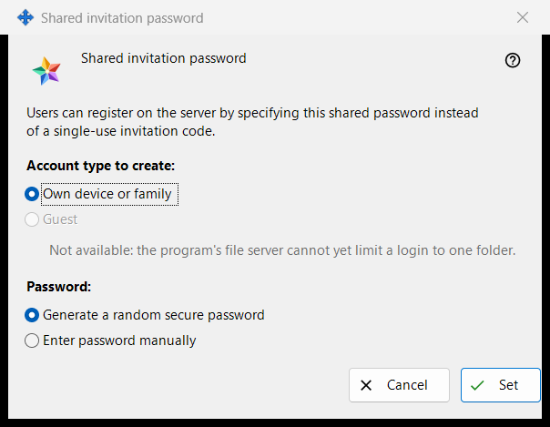
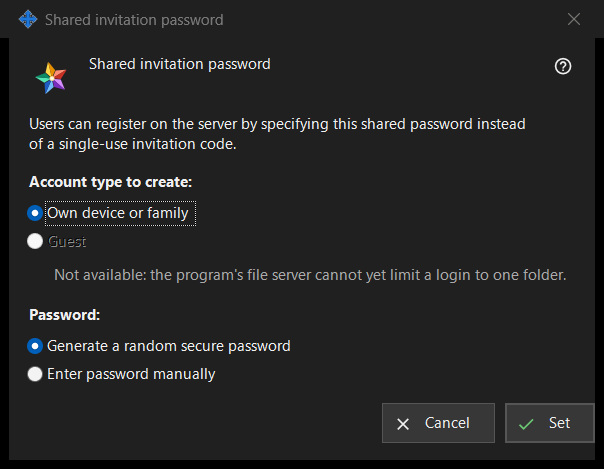

Shared invitation password
What this is for
This window lets users register on the server with one shared password instead of a single-use invitation code. Open it by ticking «Shared invitation password» in the Invitations group of Exchange server settings, or with «Set shared password..» beside it.


In this order
- Choose the account type.
- Choose whether the program generates the password or you type it.
- Press «Set».
- If the password was generated, copy it from the window that shows it once.
- To stop accepting it, untick «Shared invitation password» and confirm.
The elements
Account type
«Account type to create:» offers «Own device or family» and «Guest». «Guest» is disabled and the line under it gives the reason: the program's file server cannot limit a login to one folder. When a shared password is already on, its current type is preselected. If that existing type is Guest, «Set» is disabled; the shared password can still be switched off.
Password
«Password:» offers «Generate a random secure password» (selected by default) and «Enter password manually». After «Set», a typed password is asked for in a password window that checks the policy: at least 10 characters with an upper-case Latin letter, a lower-case Latin letter and a digit. Cancelling that window brings you back here.
Set
«Set» sends the password and the account type to the server and turns the shared password on; the page shows «Shared invitation password saved and activated.» and the status line under the checkbox reads «Shared password enabled (account type: ..).» A generated password is shown once in a window of its own: copy it there, it cannot be read again. Everyone who knows the password can register an account of the chosen type, so pass it only to people you want to admit.
Switch off
Unticking the checkbox asks «Disable the shared invitation password? New registrations with it will become impossible.» The default answer is No. After Yes the page shows «Shared invitation password disabled.» and the status line reads «Shared password disabled.»
Cancel
«Cancel» or Escape closes the window and changes nothing. If you opened it by ticking the checkbox, the checkbox returns to its previous state.
Manager settings · SFTP sharing settings · Exchange server settings